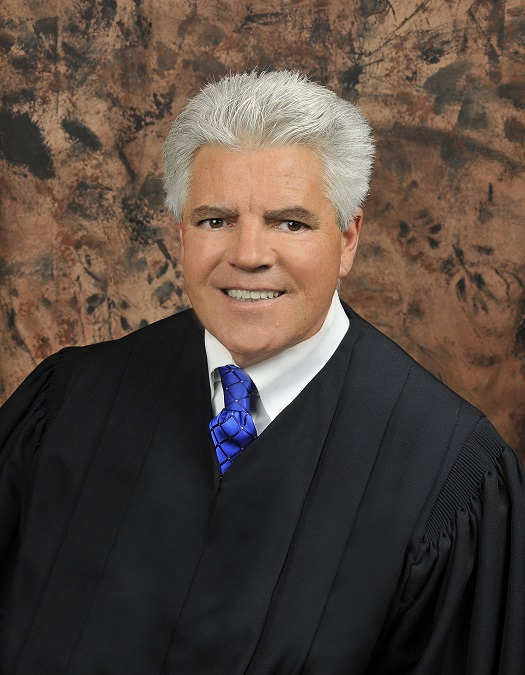

CURRENT JUDGES
Judge Robert R. Altice, Jr.
2nd District
Robert R. Altice, Jr., was appointed to the Court by Governor Pence and
began serving on Sept. 2, 2015. He earned his B.A. from Miami
University, OH; an M.S. in criminal justice administration from the
University of Central Missouri; and his law degree from the University of
Missouri-Kansas City School of Law. Judge Altice was a deputy prosecutor
in Jackson County, MO, then focused on medical malpractice defense with
a Kansas City firm. He later joined an Indianapolis firm, concentrating on
insurance defense. From 1994-2000, Judge Altice prosecuted major
felonies for the Marion County Prosecutor’s Office, including three years
as Chief of the Felony Division. After his 2000 election to the Marion
County bench, he presided at more than 250 major felony jury trials and
15 civil jury trials. He was Presiding Judge of the Marion Superior
Court from 2009-2011. Judge Altice is a member of the Indiana Judges
Association, has served on the Board of Directors of the Judicial
Conference of Indiana, and was a member of the Indiana Judicial
Conference Community Relations Committee and Civil Bench Book Committee.
began serving on Sept. 2, 2015. He earned his B.A. from Miami
University, OH; an M.S. in criminal justice administration from the
University of Central Missouri; and his law degree from the University of
Missouri-Kansas City School of Law. Judge Altice was a deputy prosecutor
in Jackson County, MO, then focused on medical malpractice defense with
a Kansas City firm. He later joined an Indianapolis firm, concentrating on
insurance defense. From 1994-2000, Judge Altice prosecuted major
felonies for the Marion County Prosecutor’s Office, including three years
as Chief of the Felony Division. After his 2000 election to the Marion
County bench, he presided at more than 250 major felony jury trials and
15 civil jury trials. He was Presiding Judge of the Marion Superior
Court from 2009-2011. Judge Altice is a member of the Indiana Judges
Association, has served on the Board of Directors of the Judicial
Conference of Indiana, and was a member of the Indiana Judicial
Conference Community Relations Committee and Civil Bench Book Committee.
